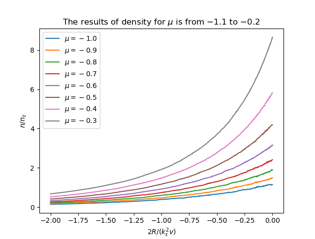
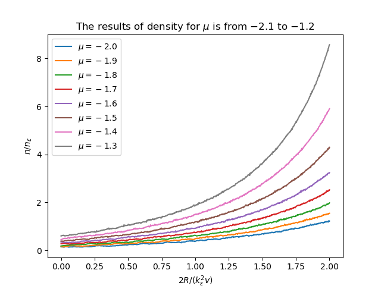

NSR Calculate
Table of Contents
1. Free Energy vs. Renormalize Paramaters
1.1. p-wave
1.1.1. cal
\begin{align}
\delta^p(\vec{q}, z) =& \mathrm{Arg}\left[ \frac{Mk_{n^2}}{2}\frac{1}{R}
\left(
\frac{1}{4\pi}\cdot \frac{2R}{k_n^2 v}
+ \tilde{z}\cdot\frac{1}{4\pi}
+ \frac{2 R}{M k_n^2}\Pi_r(\vec{q},z)
\right)
\right] \\
=& \mathrm{Arg}\left[
\frac{1}{4\pi}\cdot \frac{2R}{k_n^2 v}
+ \tilde{z}\cdot\frac{1}{4\pi}
+ \frac{2 R}{M k_n^2}\Pi_r(\vec{q},z + \mathrm{i}0^+)
\right]
\end{align}
其中 \(\tilde{z}=z/E_n\) , \(E_n = k_n^2/(2M)\) , \(k_n^3 = 6\pi^2n\) , \(n = N/V\)
\begin{align} \frac{2 R}{M k_n^2}\Pi_r(\vec{q},z) =& (k_n R)\cdot\Pi_r \cdot \frac{2}{Mk_n^3}\\ =& \tilde{R}\left[ \frac{2}{Mk_n^3}\left( -\frac{M}{V} \right)\sum_{\vec{k}}1 - \tilde{z}E_n \frac{M^2}{V}\frac{2}{Mk_n^3}\sum_{\vec{k}}\frac{1}{k^2} + \frac{2}{Mk_n^3}\Pi^{l=1}(\vec{q},z) \right] \\ =& \tilde{R}\left[ -\frac{1}{\pi^2}\int \mathrm{d}\tilde{k}\cdot \tilde{k}^2 -\tilde{z} \frac{1}{2\pi^2}\int \mathrm{d}\tilde{k} +\tilde{\Pi}^{l=1} \right] \end{align}其中 \(\tilde{R} = k_nR\) , \(\tilde{k} = k/k_n\)
\begin{align} \tilde{\Pi}^{l=1} = &\frac{2}{Mk_n^3}\Pi^{l=1}(\vec{q},\omega) \\ =& \frac{2}{Mk_n^3}\frac{1}{V}\frac{V}{(2\pi)^3}\int \mathrm{d}\tilde{k} \left[ k^2 \cdot 4\pi |Y_{lm}(\hat{k})|^2 \frac{1+n(\xi_{\vec{k}+\vec{q}/2}) + n(\xi_{-\vec{k}+\vec{q}/2})} {\xi_{\vec{k}+\vec{q}/2} + \xi_{-\vec{k}+\vec{q}/2} - \omega} \right] \\ =& \frac{2}{\pi^2}\int \mathrm{d}\tilde{k}\cdot\tilde{k}^4\left[ \frac{1+n(\xi_{\vec{k}+\vec{q}/2}) + n(\xi_{-\vec{k}+\vec{q}/2})} {\tilde{\xi}_{\vec{k}+\vec{q}/2} + \tilde{\xi}_{-\vec{k}+\vec{q}/2} - \tilde{\omega}} \right] \end{align}其中 \(\tilde{\xi} = \xi/E_n\) , \(\tilde{\omega} = \omega/E_n\) , \(n(\xi) = \frac{1}{e^{\beta \xi}-1}\)
最终
\begin{align} \frac{\tilde{\Omega}}{N E_n} =& \frac{1}{N E_n} \frac{V}{(2\pi^3)}\int \mathrm{d}^3\vec{q} \cdot \int \frac{\mathrm{d}\omega}{\pi}\cdot \frac{1}{e^{\beta\omega}-1} \delta^p \\ =& \frac{3}{\pi} \int \mathrm{d}\tilde{q}\cdot \tilde{q}^2 \int_{-\infty}^{+\infty}\mathrm{d}\tilde{\omega} \cdot \frac{1}{e^{\tilde{\beta}\tilde{\omega}}-1} \tilde{\delta}^p(\vec{q},z) \end{align}其中 \(\tilde{\beta} = \beta E_n\) . 得自由能
\begin{align} \frac{F}{NE_n} = \frac{\tilde{\Omega}}{N E_n} -\frac{\mu}{E_n} \end{align}即
\begin{align} f(\tilde{\mu}, \tilde{R}) = \tilde{\Omega}'(\tilde{\mu}, \tilde{R})-\tilde{\mu} \end{align}其中 \(\tilde{\mu} = \mu/E_n\).
\(\mu\) 由
\begin{align} N = - \frac{\partial\Omega}{\partial \mu} \end{align}决定.
1.2. 以 \(\varepsilon\) 为单位
若以某一能量 \(\varepsilon\) 为单位, 对应的长度单位 \(k_{\varepsilon} = \sqrt{2M\varepsilon}\) , 密度单位 \(n_{\varepsilon} = k_{\varepsilon}^3/(6\pi^2)\) , 那么
\begin{align} \frac{\Omega}{N \varepsilon} = & \frac{n_{\varepsilon}}{n}\int \mathrm{d}\tilde{q}\cdot \tilde{q}^2 \int_{-\infty}^{+\infty}\mathrm{d}\tilde{\omega} \cdot\frac{3}{\pi}\cdot \frac{1}{e^{\tilde{\beta}\tilde{\omega}}-1} \tilde{\delta}^p(\vec{q},z) \\ = & \frac{n_{\varepsilon}}{n}\int \mathrm{d}\tilde{q}\cdot \tilde{q}^2 \int_{-\infty}^{+\infty}\mathrm{d}\tilde{\omega} \cdot f(\tilde{q}, \tilde{\omega}, \tilde{\mu}, \tilde{\beta}) \end{align}其中
\begin{align} f(\tilde{q}, \tilde{\omega}, \tilde{\mu}, \tilde{\beta}) = \frac{3}{\pi}\cdot \frac{1}{e^{\tilde{\beta}\tilde{\omega}}-1} \tilde{\delta}^p(\vec{q},z) \end{align}而
\begin{align} \frac{n}{n_{\varepsilon}} =& - \frac{1}{n_{\varepsilon}V} \frac{\partial\Omega}{\partial\mu} =- \frac{1}{n_{\varepsilon}V} \frac{\partial\Omega/\mu}{\partial\tilde{\mu}}\\ =& - \frac{1}{n_{\varepsilon}V} \frac{\partial}{\partial\tilde{\mu}}\left[ V n_{\varepsilon} \int \mathrm{d}\tilde{q}\cdot \tilde{q}^2 \int_{-\infty}^{+\infty}\mathrm{d}\tilde{\omega} \cdot f(\tilde{q}, \tilde{\omega}, \tilde{\mu}, \tilde{\beta}) \right] \\ =& - \frac{\partial}{\partial\tilde{\mu}}\left[ \int \mathrm{d}\tilde{q}\cdot \tilde{q}^2 \int_{-\infty}^{+\infty}\mathrm{d}\tilde{\omega} \cdot f(\tilde{q}, \tilde{\omega}, \tilde{\mu}, \tilde{\beta}) \right] \end{align}所以最终要求的为
\begin{align} \frac{\Delta F}{NE_n} =& \frac{\Omega}{NE_n} + \frac{\mu}{E_n} \\ =&\frac{\Omega}{N\varepsilon}\left( \frac{\varepsilon}{E_n} \right) + \tilde{\mu} \left( \frac{\varepsilon}{E_n} \right) \\ =& \left( \frac{n_{\varepsilon}}{n} \right)^{5/3} \int\mathrm{d}\tilde{q}\cdot \tilde{q}^2 \int_{-\infty}^{+\infty}\mathrm{d}\tilde{\omega} \cdot f(\tilde{q}, \tilde{\omega}, \tilde{\mu}, \tilde{\beta}) + \tilde{\mu} \left( \frac{n_{\varepsilon}}{n} \right)^{2/3} \\ \end{align}横坐标为
\begin{align} \frac{2R}{k_n^2v} = \frac{2R}{k_{\varepsilon v}}\cdot \left( \frac{n_{\varepsilon}}{n} \right)^{2/3} \end{align}2. result






3. code
计算 \(\Delta F\)
from matplotlib import pyplot as plt
import numpy as np
from scipy import integrate
#from scipy.misc import derivative
from scipy.integrate import fixed_quad
import time
start = time.process_time()
nn = 10
beta = 1
er = 1e-6
R = 1/30
epsabs = 1e-1
def xi(k, mu):
return k**2 - mu
def n(k, mu):
x = xi(k,mu)
# print(x)
n = 1 / (np.exp(beta*x) - 1)
return n
def z(omega, q, mu):
return omega - q**2/2 + 2*mu
def pi(omega, q, k, mu):
pi = 1 + n(k+q/2, mu) + n(-k+q/2, mu)
pi = pi / (xi(k+q/2, mu) + xi(-k+q/2, mu) -omega)
pi = pi * k**4
pi = pi -k**2/2 - z(omega, q, mu)/4
pi = pi*2 / np.pi**2
return pi
def PI(omega, q, mu):
zz = z(omega, q, mu)
if zz<0:
PI, err = fixed_quad(lambda x: pi(omega, q, x, mu), er, 10,
n=nn)
else:
a = np.sqrt(zz/2)
PI1, err = fixed_quad(lambda x: pi(omega, q, x, mu), er, a-er,
n=nn)
PI2, err = fixed_quad(lambda x: pi(omega, q, x, mu), a+er,
10, n=nn)
PI = PI1 + PI2
PI = PI * R
return PI
def delta(omega, q, rkv, mu):
zz = z(omega, q, mu)
if zz<0:
img = 0
else:
k = np.sqrt(zz/2)
img = 1 + n(k+q/2, mu) + n(-k+q/2, mu)
img = img * R/(2*np.pi)
img = img * k**3
rel = PI(omega, q, mu)
rel = rel + rkv/(4*np.pi)
rel = rel +zz/(4*np.pi)
delta = np.angle(rel + 1j*img) - np.pi
return delta
def f(omega, q, rkv, mu):
f = 1 / (np.exp(beta*omega) - 1)
f = f * delta(omega, q, rkv, mu)
f = 3 * f /np.pi
return f
def F(rkv, mu):
ff = lambda y, x: f(y, x, rkv, mu)
F, err = integrate.dblquad(ff, er, 3, lambda x:er, lambda x:10, epsabs
= epsabs)
return F
M = 1000
N = 10
x = np.linspace(0, 2, M)
y = np.zeros(M*N)
y.shape = (M, N)
mu = np.linspace(-2.1, -1.2, N)
for j in range(N):
for i in range(M):
y[i, j] = F(x[i], mu[j])
print('mu_', j, 'y_', i, '=', y[i, j])
np.savetxt('y.txt', y)
print(y)
density = np.zeros(M*(N-2))
density.shape = (M, N-2)
dd = mu[1] - mu[0]
for j in range(N-2):
for i in range(M):
density[i, j] = y[i, j+2] - y[i, j]
density[i, j] = - density[i, j] / (2*dd)
print('mu_', j, 'density_', i, '=', density[i, j])
np.savetxt('density.txt', density)
print(density)
for i in range(N):
plt.plot(x, y[:, i], label=r'$\mu/\epsilon$=%.2f' %mu[i])
plt.legend()
end = time.process_time()
print('time=', end-start, 'seconds')
plt.show()
计算 \(T_{C}\)
N = 100
rkv = np.linspace(-10, -.1, N)
f0 = np.zeros(N)
f1 = np.zeros(N)
density = np.zeros(N)
for i in range(N):
print('rkv_', i, '=', rkv[i])
f0[i] = F(rkv[i], -1e-3)
print('f0_', i, '=', f0[i])
f1[i] = F(rkv[i], -.1)
print('f1_', i, '=', f1[i])
density[i] = - (f0[i] - f1[i]) / .1
print('density_', i, '=', density[i])
np.savetxt('f0.txt', f0)
np.savetxt('f1.txt', f1)
np.savetxt('density.txt', density)
x = np.zeros(N)
y = np.zeros(N)
for i in range(N):
x[i] = rkv[i]/(density[i]**(2/3))
y[i] = 1/(density[i]**(2/3))
plt.plot(x, y)
end = time.process_time()
print('time=', end-start, 'seconds')
plt.xlabel(r'$2R/(k_n^2 v)$')
plt.ylabel(r'$k_BT_C/E_n$')
plt.show()
def tm(omega, q, rkv, mu):
zz = z(omega, q, mu)
rel = PI(omega, q, mu)
rel = rel + rkv/(4*np.pi)
rel = rel +zz/(4*np.pi)
return rel
N = 1000
M = 20
mu = np.linspace(-80, -1e-2, N)
y = np.zeros(N)
rkv = np.linspace(2, 100, M)
muRoot = np.zeros(M)
for j in range(M):
c = 0
for i in range(N):
y[i] = tm(0, 0, rkv[j], mu[i])
if np.abs(y[i])<np.abs(y[c]):
c = i
print('y_', c, '=', y[c])
muRoot[j] = mu[c]
plt.plot(mu, y, label=r'$2R/(k_{\epsilon}^2v)=%.1f$'%rkv[j])
plt.legend()
plt.xlabel(r'$\mu/\epsilon$')
plt.ylabel(r'$T^{-1}$')
print(muRoot)
plt.show()
Tc = np.zeros(M)
Rn = np.zeros(M)
dens = np.zeros(M)
for i in range(M):
print(i)
dd = np.abs(muRoot[i]) * .1
print('dd=', dd)
f1 = F(rkv[i], muRoot[i]+dd)
print('f1=', f1)
f2 = F(rkv[i], muRoot[i]-dd)
print('f2=', f2)
nnn = - (f1 - f2) / (2*dd)
print('nnn=', nnn)
Tc[i] = 1 / (nnn**2/3)
print('Tc=', Tc[i])
Rn[i] = rkv[i] / (nnn**2/3)
print('Rn=', Rn[i])
dens[i] = nnn
print('dens=', dens[i])
end = time.process_time()
print('time is', end-start, 'secends')
np.savetxt('density.txt', dens)
plt.plot(Rn, Tc)
plt.xlabel(r'$2R/(k_n^2 v)$')
plt.ylabel(r'$k_BT_C/E_n$')
plt.show()